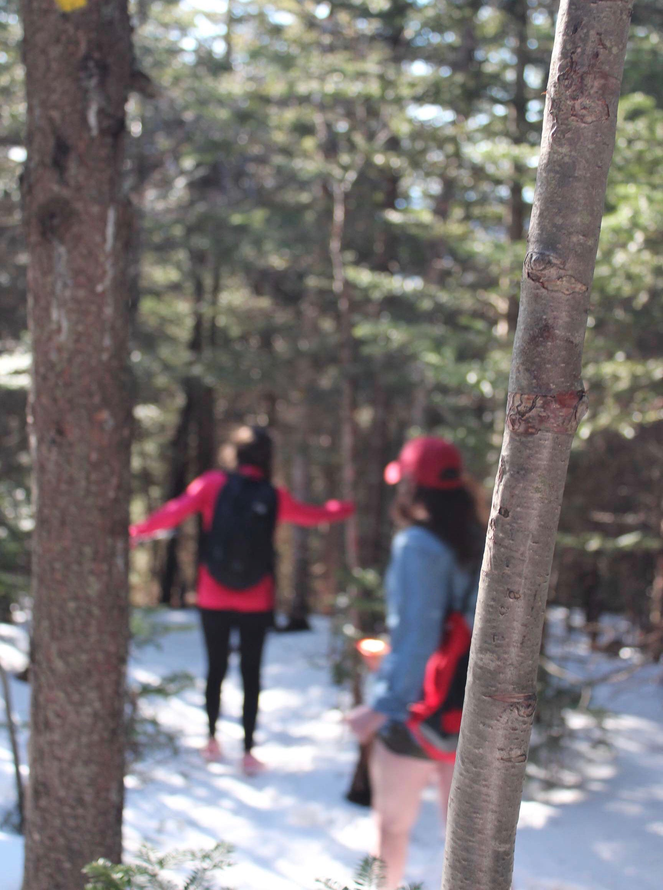
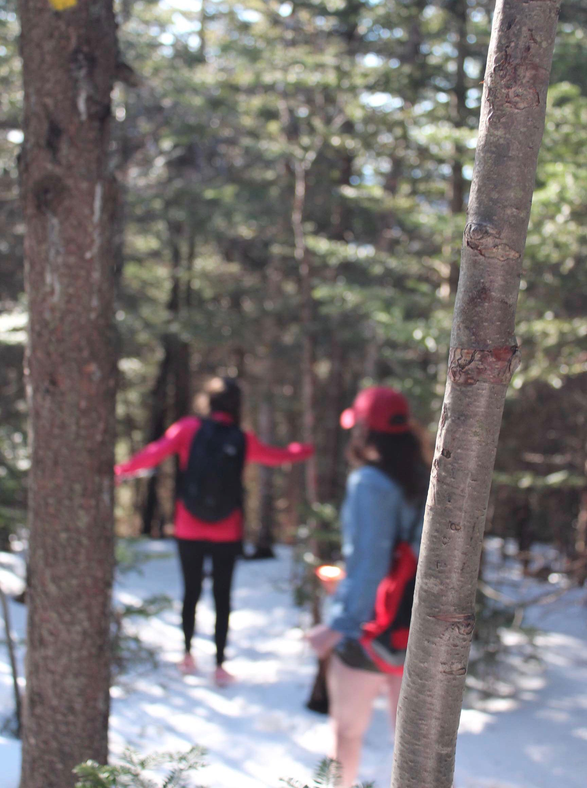

Britney Grilo's Homepage
My name is Britney, I live in Bradford, New Hampshire. Which is a town in the middle of nowhere, and completely surrounded by woods.
I am currently a freshman at the University of Maine in Orono. My major is in Business Management.
School
I went to Kearsarge Regional High School, which was small considering it consisted of five towns. I had gone to this school district since kindergarten.
Things I was involved in during high school:
Things I like to do in my free time:
 
